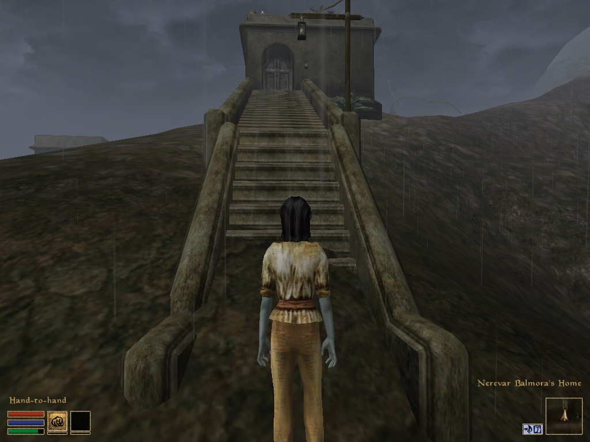
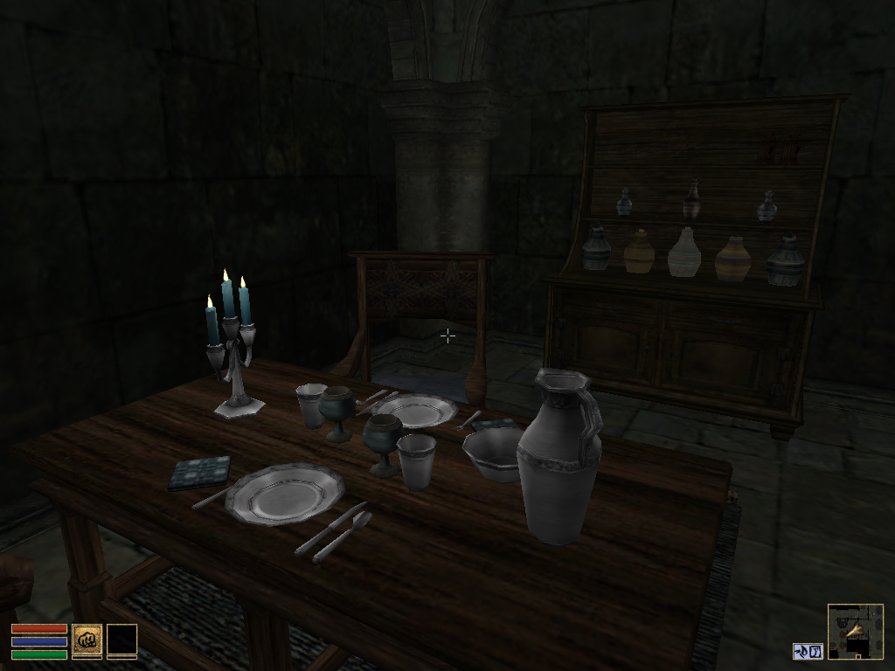
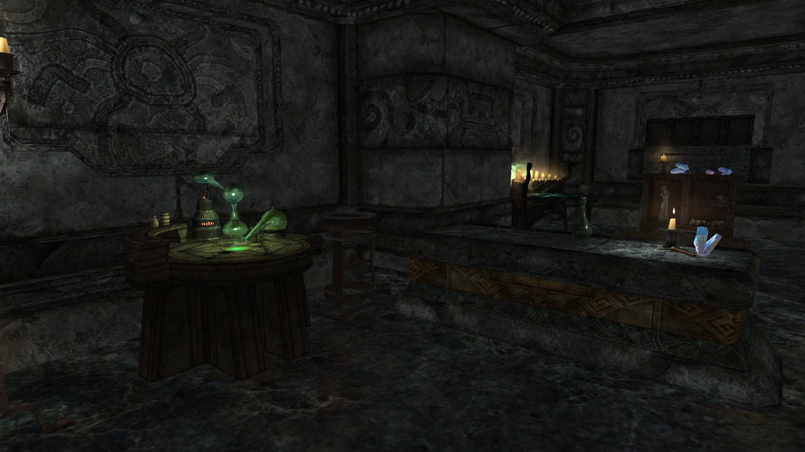

I was booted out the door/downsized by my job of 20 years. By a sexual assaulter, as it turned out. The idea of going to anyone at the old haunt and asking for a reference is unappealing, to say the least.
What follows is an example of the challenges I take on for fun with a meaningful reference by someone who knows me better than all previous coworkers combined (and she was, in fact, a coworker before she was my spouse). There's much more than I can highlight here. I do "work" in support of my and my wife's video game hobby of a grinding, tedious nature that would drive the 10-hours-per-game player nuts...because I'm built to love it.
What will I be capable of in your work environment? It certainly can't be said that I don't put in the effort. And if you do, my wife will disagree ;). We were highly effective coworkers.
I was told I needed references...
1 / 40
2 / 40
This is Fergus. I made and scripted him in the video game Skyrim. My wife is a fan of the Elder Scrolls series. I'm a fan of their Creation Kits/Construction Sets or whatever the title they give to the latest release of the game creation program to players. After I discovered modding the games I spent 6 months - each - modding Morrowind and Skyrim so my wife could have more than the player houses provided. And then I did it again because of how much I learned from each game's work. I enjoy doing it for her a lot. Her words and appreciation are the most revealing reference I can give. Fergus here is scripted to be a marriageable character in the game, and everything you'll see in the images was placed by me.
3 / 40

"I have been playing Elder Scrolls games ever since the release of Morrowind in May of 2002."
4 / 40
"The mods Rane has created for me have extended my enjoyment of these games by years."
5 / 40
"I asked him to create a house mod for me for Morrowind."
6 / 40
"I told him I would really like plenty of storage and something that looked nice."
7 / 40
"What he created is so much more than I could have imagined."
8 / 40
"The house mod for Morrowind has a garden with every pickable ingredient in the game and the plants regenerate."
9 / 40
"Perfect for collecting ingredients to make potions."
10 / 40
"All of the storage placed throughout the house is placed in such a way that it doesn’t feel like just a bunch of storage."
11 / 40
"Instead, the various storage is integrated into the decoration of the home."
12 / 40

"There are so many little touches throughout the house."
13 / 40
"Plants shrunk and placed in containers to make vases of flowers."
14 / 40
"The ingenuity of the Portal Room allows my character the ability to travel throughout the world."
15 / 40
"The Library has so much detail."
16 / 40
"It includes all the books in the game arranged on shelves, an Alchemy area with working equipment..."
17 / 40
"...and a small Daedric Museum."
18 / 40

"The Bath includes details such as grates on the floor for draining and water pouring in through a grate on the wall."
19 / 40
"I was so delighted with the mod, when Skyrim was released, I asked him to create a house mod for this game as well."
20 / 40
"He created an Estate."
21 / 40
"There is a stable on the grounds..."
22 / 40
"...which houses two custom made horses."
23 / 40
"There is a vegetable garden..."
24 / 40
"...and a pasture complete with a cow, a goat and chickens."
25 / 40
"A fish hatchery is in the lake..."
26 / 40
"...and a smokehouse."
27 / 40
"There is a flower garden and a couple apiaries."
28 / 40
"There is also a fully functional forge and smelter."
29 / 40
"In addition to the horses and farm animals there is a dragon that guards the estate."
30 / 40
"In the entry hall of the home is a fountain."
31 / 40
"The kitchen includes a working cook fire and a working oven."
32 / 40
"So many of the items in the house are interactive."
33 / 40
"Shelves I can place books on..."
34 / 40

"...alchemy equipment, enchanting equipment..."
35 / 40
"...and displays that I can use to display weapons and armor acquired through gameplay."
36 / 40
"The detail of the house is wonderful."
37 / 40
"The museum is broken into areas of specialized uses and yet remains very cohesive."
38 / 40
"The NPCs have routines they follow throughout the game days."
39 / 40
"The entire estate is designed for maximum immersion."
40 / 40
"I have enjoyed the experience of Rane’s mods for Elder Scrolls games immensely and they have made the games even more enjoyable."
Stacy Kaseman
Stacy Kaseman